تغيير خامة لابيلا قماش أو خياطة أو فرو. الصورة أعلاه هي المرجع الصحيح بدل إعادة صنع نسخة خاطئة.
وعود غير منفذةلا ندّعي قياسًا افتراضيًا أو استماعًا أو نتائج دقة أو توفير وقت مثبتة.النص المضلل ليس جزءًا من مكتبة النسخ.